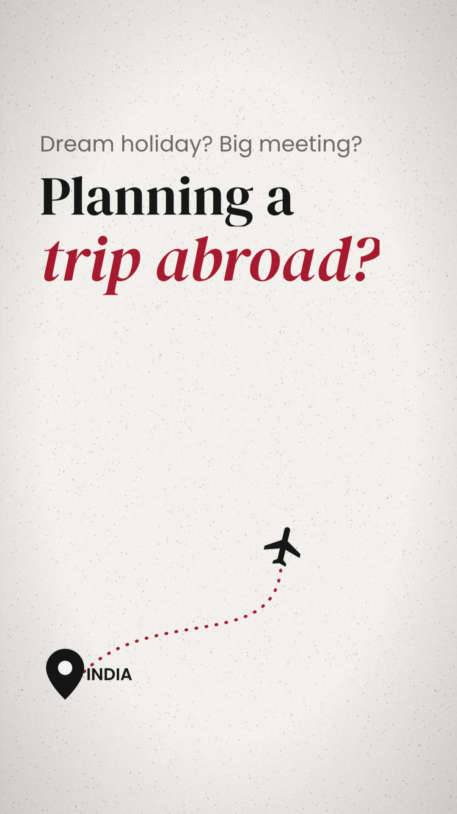
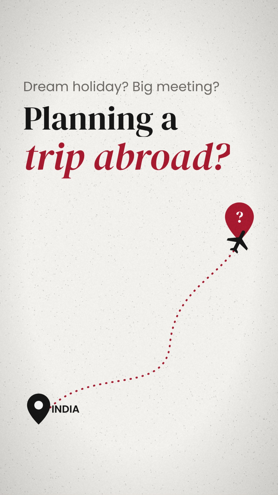
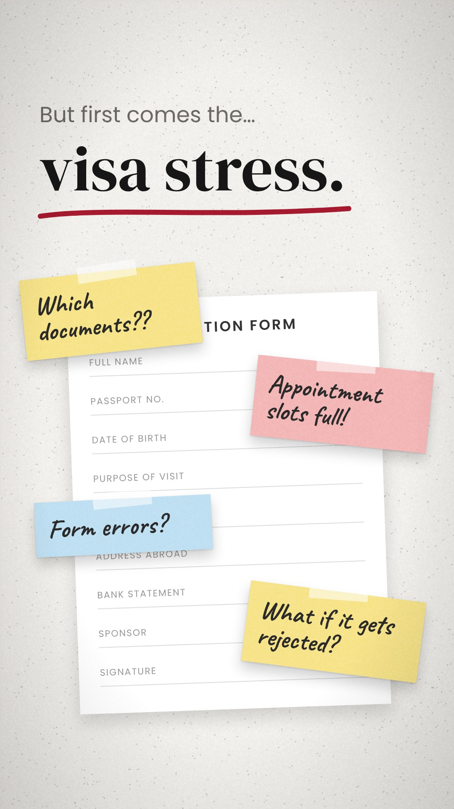
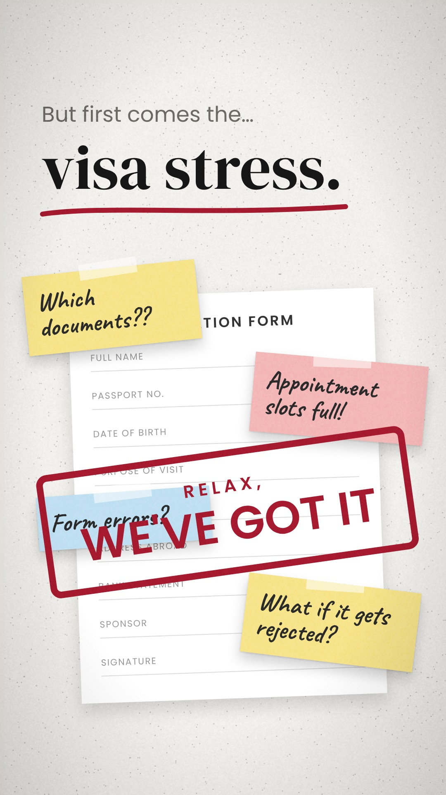
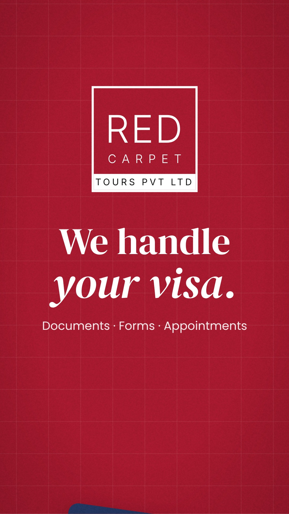
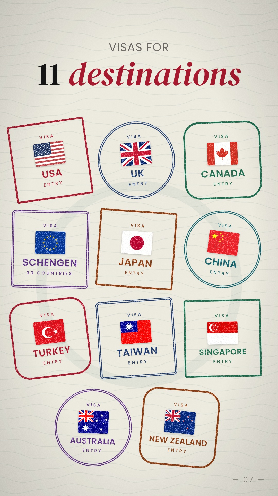
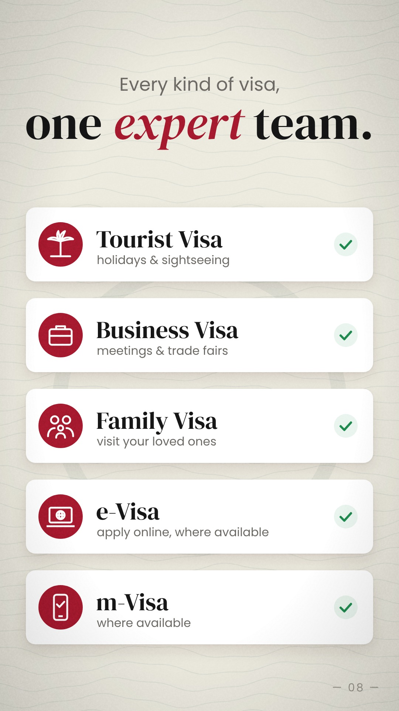
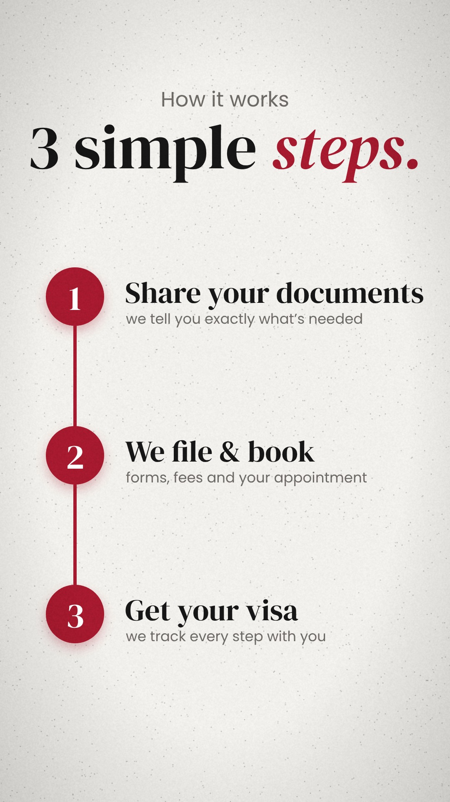
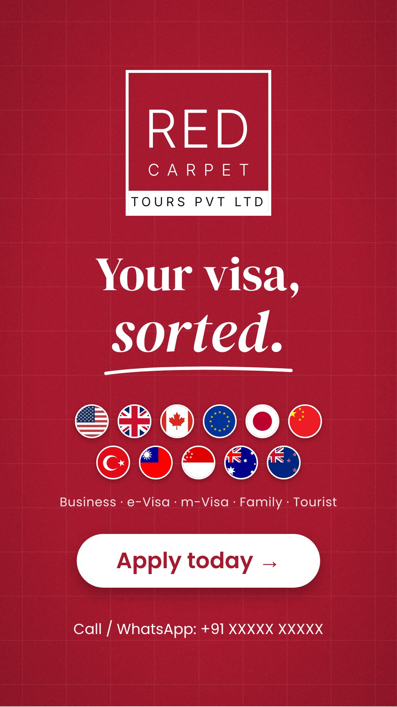

9:16 · about 37 s · no voiceover: the text tells the story · smooth transitions on the music beat · brand red #A6192E

1 · 0–3 s · Hook
A plane flies a dotted route from INDIA to a "?" pin. "Planning a trip abroad?" rises in line by line.
→ zoom-through into the "?" pin

1 · Hook (complete)
Dream holiday? Big meeting? Anyone who's travelling.
→ blur-zoom transition

2 · 3–6 s · The problem
"visa stress." A form, then sticky notes pop in: documents, appointment slots, form errors, rejection.
notes shake slightly (tension)

2 · The turn
A big red stamp slams down: "RELAX, WE'VE GOT IT" (the screen shakes).
→ red circle expands out of the stamp

3 · 7–10 s · The solution
Logo, "We handle your visa." Documents · Forms · Appointments.
→ passport rises and the camera zooms into it

4 · 10–20 s · 11 destinations
Inside the passport, a visa stamp lands on the beat for each country (flag + name). The 11 count ticks up. Schengen says "30 countries".
→ page-turn (3D flip)

5 · 20–25 s · Visa types
5 cards slide in with a ✓: Tourist, Business, Family, e-Visa, m-Visa, each with an icon and one line.
→ whip-pan push (motion blur)

6 · 25–31 s · 3 simple steps
Share documents → We file & book → Get your visa. A red progress line runs down the steps.
→ red circle expands from step 3

7 · 31–37 s · CTA
Logo, "Your visa, sorted.", 11 flags, the 5 visa types, an "Apply today →" button and your contact number.
button pulses · music fades out
Music
112 BPM warm travel pop (made in code, copyright-free).
Soft intro → beat drops at the "stamp" → stamps land on the beat → whooshes on transitions → big ending hit → fade.
Please send: the exact logo file and the phone/WhatsApp number for the end card. The m-Visa line currently says "where available"; tell me if it should say something else.